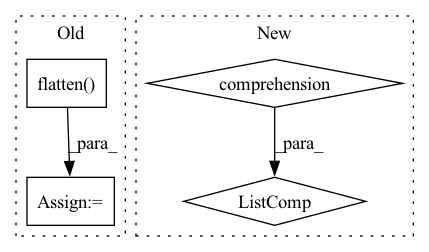

Pattern ID :36207

Before Change
def loss_class(self, outputs, soft_labels):
assert "pred_logits" in outputs
cls_preds = outputs["pred_logits"].flatten()
cls_labels = soft_labels.flatten()
// Remove non existent classes
valid_ids = (cls_labels != -1).nonzero()
After Change
idx = self._get_src_permutation_idx(indices)
target_classes_o = torch.cat([t["labels"][J] for t, (_, J) in zip(targets, indices)])
target_classes = torch.full(src_logits.shape[:2], 0,
dtype=torch.int64, device=src_logits.device)
target_classes[idx] = target_classes_o
In pattern: SUPERPATTERN
Frequency: 3
Non-data size: 4
Instances
Fragment ID: 102639162
Project Name: bwittmann/transoar
Commit Name: 968e31194fced5e1134b6dda145a63d38d9b6236
Time: 2022-03-09
Author: bastian.wittmann@tum.de
File Name: transoar/models/criterion.py
M Class Name: TransoarCriterion
N Class Name: TransoarCriterion
M Method Name: loss_class(4)
N Method Name: loss_class(3)
M Parent Class: nn.Module
N Parent Class: nn.Module
M File Name: transoar/models/criterion.py
N File Name: transoar/models/criterion.py
M Start Line: 32
M End Line: 38
N Start Line: 40
N End Line: 54
'>
Before Change
positive = pd.read_csv(
bingliu_pos_bytes, sep="\n", header=None, names=["word"], encoding="latin-1"
)
positive_cleaned = positive.loc[29:].values.flatten().tolist()
bingliu_lexicon = {
"positive_words": positive_cleaned,
After Change
resource_package, resource_pos_path
)
negative_words = [
word.decode("latin-1").strip() for word in bingliu_neg_bytes.readlines()
][31:]
positive_words = [
word.decode("latin-1").strip() for word in bingliu_pos_bytes.readlines()
][30:]
'>
Fragment ID: 102639163
Project Name: dccuchile/wefe
Commit Name: ec75b4f3c362732f7a01b582ca2eeb419c99aab8
Time: 2022-08-24
Author: pbadilla.torrealba@gmail.com
File Name: wefe/datasets/datasets.py
M Class Name: AnonimousClass
N Class Name: AnonimousClass
M Method Name: load_bingliu(0)
N Method Name: load_bingliu(0)
M Parent Class:
N Parent Class:
M File Name: wefe/datasets/datasets.py
N File Name: wefe/datasets/datasets.py
M Start Line: 234
M End Line: 255
N Start Line: 234
N End Line: 253
'>
Before Change
positive = pd.read_csv(
bingliu_pos_bytes, sep="\n", header=None, names=["word"], encoding="latin-1"
)
positive_cleaned = positive.loc[29:].values.flatten().tolist()
bingliu_lexicon = {
"positive_words": positive_cleaned,
After Change
negative_words = [
word.decode("latin-1").strip() for word in bingliu_neg_bytes.readlines()
][31:]
positive_words = [
word.decode("latin-1").strip() for word in bingliu_pos_bytes.readlines()
][30:]
bingliu_lexicon = {
"positive_words": positive_words,
'>
Fragment ID: 102639159
Project Name: dccuchile/wefe
Commit Name: 6afca8ef990a5173c0d48994a61eae624671d81d
Time: 2022-05-29
Author: pbadilla.torrealba@gmail.com
File Name: wefe/datasets/datasets.py
M Class Name: AnonimousClass
N Class Name: AnonimousClass
M Method Name: load_bingliu(0)
N Method Name: load_bingliu(0)
M Parent Class:
N Parent Class:
M File Name: wefe/datasets/datasets.py
N File Name: wefe/datasets/datasets.py
M Start Line: 234
M End Line: 255
N Start Line: 234
N End Line: 253